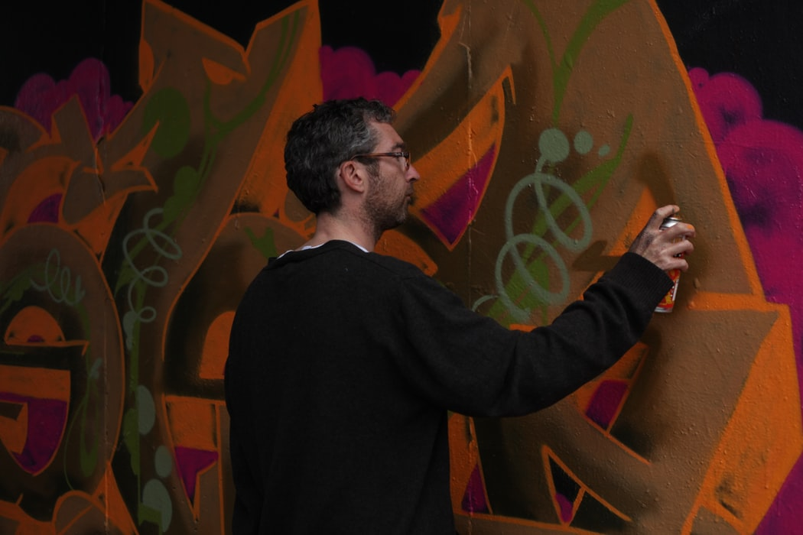
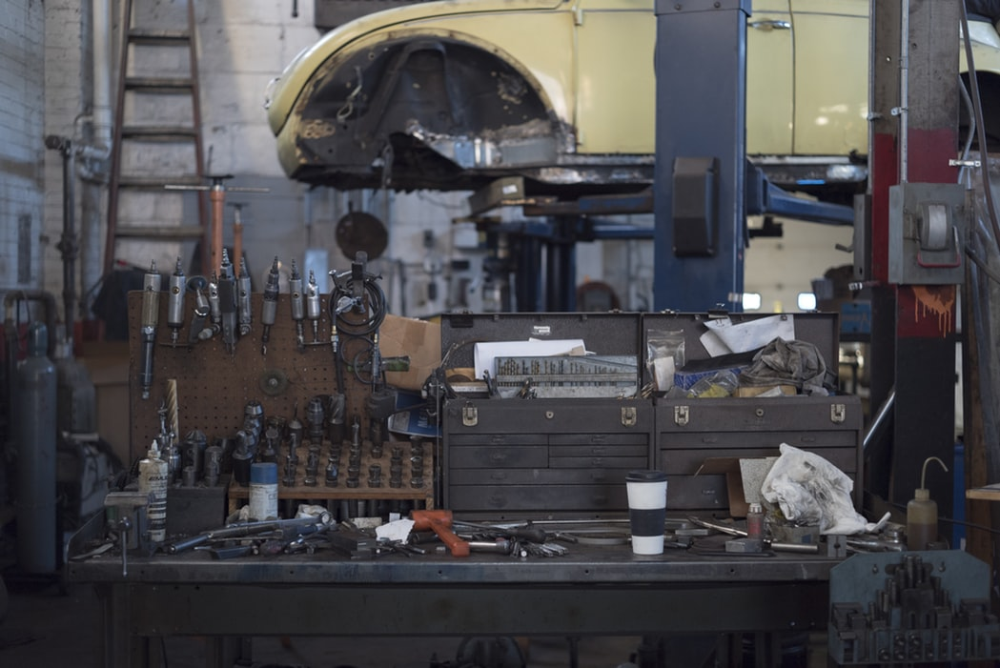

Svarvning
Har du diamondcut fälgar? Då behöver dom
svarvas, detta görs med en unik teknik i vår
specialsvarv. Först lagas skadorna med ett
skär, sedan används vår diamantskär för att få
den där speciella ytan som gör att den ser ut att
komma ut direkt från fabrik
Riktning Har du kört på en trottoarkant ordentligt eller varit med om en annan ordentlig smäll, Då är risken stor att din fälg är skev. I nästan alla fall får detta att lösa i vår riktmaskin. Riktningen utförs i flera olika moment som kräver enorm precision och kunskap.
Lackering Har du lackade fälgar så behöver fälgen slipas, lagas och lackeras. Detta sker för hand och i en av våra manuella maskiner. Vi använder oss utav lack och klarlack från världsledande färgleverantörer som är framtagen just för fälgar, som behöver ett extra starkt skydd.
Modifiering Har du tröttnat på dina fälgar? Eller har du ett par gamla liggandes som du vill göra moderna? Vi modifierar dina fälgar! Beroende på hur fälgen ser ut från början, och skick på fälgen så kan man till exempel göra en silverlackad fälg till en diamondcut fälg. Med en snygg färg eller stilrent svart eller grå bakgrund. Vi har även en unik sammansättning av klarlack där vi kan få en finish med transparent färgskimmer. Eller varför inte göra en fälg som är helt kromad?